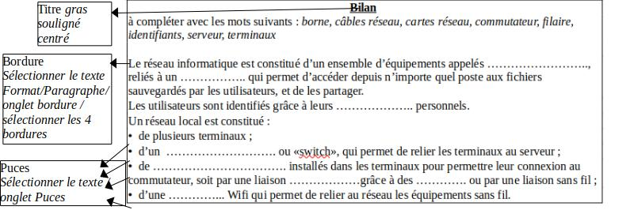

Pour faire les activités en ligne Hachette, pour commencer clique ici
Les ordinateurs de la salle de technologie permettent de stocker des fichiers. Ils peuvent communiquer entre eux au sein du réseau informatique local pour partager ces fichiers.
Connecte toi au Genially Hachette ici,
Complète le document suivant
Après avoir récupéré le document sur le cloud, Complète le bilan et mets le forme en respectant les consignes
